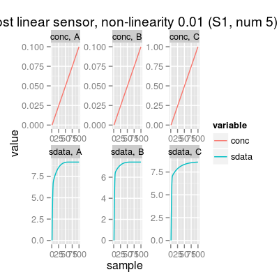

Wrapper to Class Sensor.
Usage
Sensor(num = 1, ...)
Description
Wrapper to Class Sensor.
Examples
Sensor Array of 1 sensors, 3 gases A, B, C - enableSorption TRUE, enableDyn FALSE - Sensor Model (num 1), beta 2, data model 'ispline' - Sorption Model (knum 1), alpha 2.25 - Concentration Noise Model (csd 0.1), noise type 'logconc' - Sensor Noise Model (ssd 0.1), noise type 'randomWalk' - Drift Noise Model (dsd 0.1), common model 'cpc'SensorArray - enableSorption: TRUE (1) Sensor Model - num 1 - beta 2 - 3 gases A, B, C - (first) data model - method: ispline (type: spline) - sensor model: coeffNonneg TRUE -- coefficients (first): 3.2174, 3.8031, 4.4229 ... 4.2032 (2) Sorption Model - knum 1 - 3 gases A, B, C (3) Concentration Noise Model - 3 gases A, B, C - csd: 0.1 - noise type: logconc - log-factor: 1, 1, 2 (4) Sensor Noise Model - num 1 - 3 gases A, B, C - ssd: 0.1 - noise type: randomWalk - noise-factor: 1, 1, 1, 1, 1, 1, 0.2, 0.2, 0.2 (5) Drift Noise Model - num 1 drift common model - method: cpc - ndcomp: 1
# sensor object: custom parameters s <- Sensor(num=5, enableSorption=FALSE) # sorption model disabled plot(s, main="Sensor with sorption model disabled")
s <- Sensor(num=5, alpha=0.01, gases=c(1, 3)) # amost linear sensor plot(s, main="Almost linear sensor, non-linearity 0.01")
s <- Sensor(num=5, alpha=1, gases=c(1, 3)) # saturated sensor plot(s, main="Saturated sensor, non-linearity 1")s <- Sensor(num=5, csd=0, ssd=0) # noise level is set to zero plot(s, "noise", main="Noise-free sensor")Error in match.arg(y, yval): 'arg' should be one of “response”, “timeline”, “pca”, “prediction”, “snoise”, “affinity”, “affinityMap”, “affinitySpace”, “polar”s <- Sensor(num=5, csd=1, ssd=1) # maximum reasonable level of noise plot(s, "noise", main="Very noisy sensor")Error in match.arg(y, yval): 'arg' should be one of “response”, “timeline”, “pca”, “prediction”, “snoise”, “affinity”, “affinityMap”, “affinitySpace”, “polar”# method plot # - plot types 'y': response, noise s <- Sensor() # default model plot(s, "response", main="plot(s, 'response')") # default plot type, i.e. 'plot(s)' does the same plottingError in match.arg(y, yval): 'arg' should be one of “response”, “timeline”, “pca”, “prediction”, “snoise”, “affinity”, “affinityMap”, “affinitySpace”, “polar”